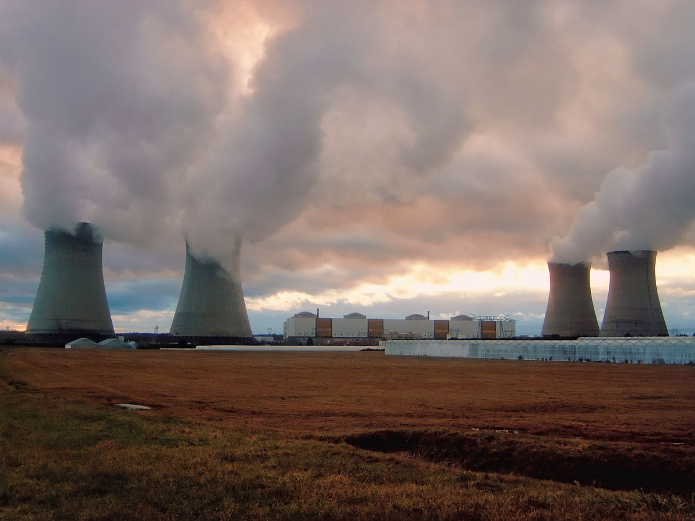
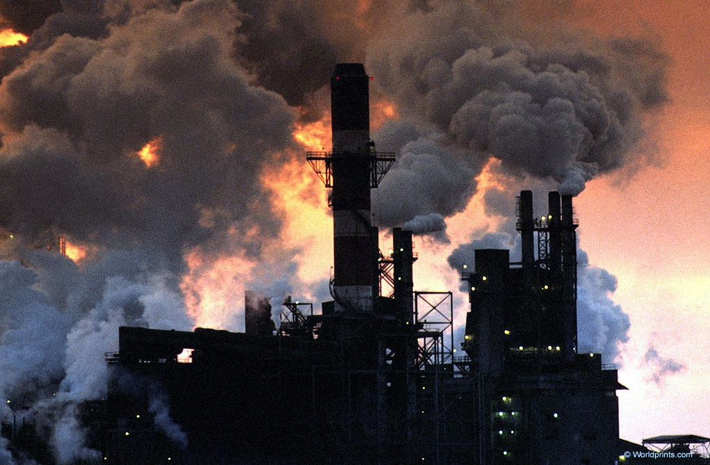
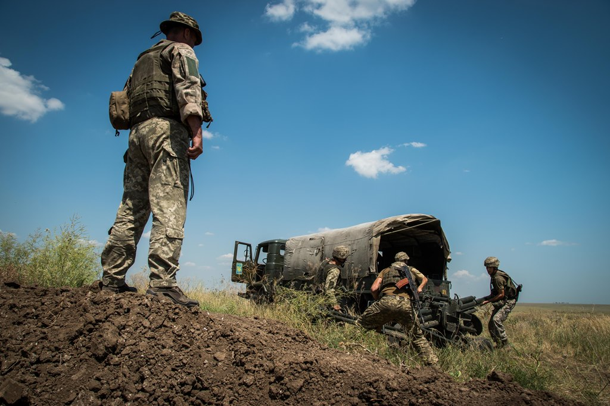

Проблеми людства та шляхи їх вирішення
Зміни, що відбуваються сьогодні у світі, - важливий крок на шляху переходу людства до нової цивілізації, що може бути сформована на шляхах вирішення глобальних проблем. Терміном "глобальні проблеми" позначаються найважливіші і настійні загальнопланетарні проблеми сучасної епохи, що торкаються людства в цілому.
Серед даних проблем виділяють такі:
Проблема перенаселення
 Ми повинні контролювати наше населення до того, як наша планета Земля не зможе його витримувати на собі. Ми повинні знайти спосіб зменшити рівень народжуваності. Це проста математика: якщо ми продовжуємо народжувати більше дітей, ніж людей, які помирають, населення збільшується. Врешті-решт людство просто загине, тому що на планеті не буде достатньо доступних ресурсів, щоб підтримувати всіх. Щоб уникнути цього сценарію, нам потрібно узгодити метод зменшення глобальної народжуваності або збільшення глобальної смертності. Це політичне питання, яке потребує жертв, подібно до проблеми зміни клімату. Рішення існують, і багато з них були протестовані протягом останніх 50 років. Однак ми не працюємо над вирішенням більшості цих проблем. Наразі час ідеальний для реалізації рішень, тому що ми ніколи не мали такого хорошого розуміння того, як все взаємопов’язано, і з більш ніж половини планети, підключеної до Інтернету, ми можемо побачити як досягти консенсусу та об’єднати людство.
Ми повинні контролювати наше населення до того, як наша планета Земля не зможе його витримувати на собі. Ми повинні знайти спосіб зменшити рівень народжуваності. Це проста математика: якщо ми продовжуємо народжувати більше дітей, ніж людей, які помирають, населення збільшується. Врешті-решт людство просто загине, тому що на планеті не буде достатньо доступних ресурсів, щоб підтримувати всіх. Щоб уникнути цього сценарію, нам потрібно узгодити метод зменшення глобальної народжуваності або збільшення глобальної смертності. Це політичне питання, яке потребує жертв, подібно до проблеми зміни клімату. Рішення існують, і багато з них були протестовані протягом останніх 50 років. Однак ми не працюємо над вирішенням більшості цих проблем. Наразі час ідеальний для реалізації рішень, тому що ми ніколи не мали такого хорошого розуміння того, як все взаємопов’язано, і з більш ніж половини планети, підключеної до Інтернету, ми можемо побачити як досягти консенсусу та об’єднати людство.
Проблема енергетики та сировинної галузі Нині людство впритул наблизилося до межі вичерпання найдоступніших, а тому і найдешевших видів органічних і мінеральних ресурсів. Передусім це стосується нафти і газу. Ці найголовніші енергоносії суспільство вимушене добувати з усе більшої глибини (понад 5-6 тис. м). Постійно зростає частка нафти й газу, видобутих з великими затратами на шельфі морів і океанів. Крім того, дедалі більше нафти й газу видобувають у віддалених районах планети з екстремальними природними умовами. Це також різко підвищує собівартість сировини. Унаслідок інтенсивного видобутку починають вичерпуватися і запаси руд металів. Особливо відчутною стає нестача найдоступніших за глибиною залягання та за районами видобутку родовищ залізної, марганцевої, мідної, нікелевої руд. Помітно збідніли ресурси алюмінієвої сировини, насамперед багатих родовищ бокситів. Це створює загрозу поглиблення кризи в галузях господарства, які виробляють такі потрібні Для людства конструкційні матеріали. Образно можна сказати так: сьогодні людство починає шкрябати по дну миски, вибираючи все, що там залишилося. Дуже виснажені й біологічні ресурси Світового океану (риба, кальмари, криль, морські водорості тощо).
Екологічні проблеми
Екологічні проблеми нині поширені практично повсюдно. Це означає, що вони створюють загрозу життєдіяльності не окремим групам людей, а людству загалом, не окремим регіонам чи країнам, а всій планеті. Екологічні проблеми можуть бути спровоковані стихійними лихами. Так, наприклад, катастрофічні повені часто спричинюють знищення сільськогосподарських угідь, забруднення поверхневих вод і спалах інфекційних захворювань. Аналогічні наслідки можуть спричинювати й землетруси або виверження вулканів тощо. Водночас екологічна проблема часто є наслідком впливу на природу людства. Упродовж усієї своєї історії людство череа господарську діяльність поступово посилювало тиск на природу, усе більше порушуючи в ній екологічну рівновагу. Наслідком цього є забруднення довкілля і своєрідна "відповідь" на порушення людиною природних зв'язків виснаження ресурсів, видозміни окремих природних компонентів і загалом природних комплексів. Сучасні принципи організації суспільства та його економічної бази є згубними для довкілля. Практично будь-яка галузь людської діяльності небезпечна для природи. Найбільший внесок у створення екологічної проблеми роблять сільське господарство, чорна й кольорова металургія, хімічна промисловість, транспорт і енергетика, особливо атомна. Ці та інші галузі світової економіки постійно насичують землю, воду й повітря інертними і хімічно активними елементами, радіонуклідами тощо. Зростає шумове та електромагнітне забруднення. При цьому порушуються природні процеси в біосфері. Наслідком такого "захворювання" та отруєння біосфери може бути її повна деградація і загибель. А з нею загине і цивілізація.
Проблема війни
Жодна нормальна сучасна держава не хоче війни. Ми всі повязані, і доля світової економіки суттєво пов’язана зі здатністю світового суспільства процвітати. Ми це знаємо завдяки глобальному доступу до Інтернету.
Разом із тим на проблему збереження миру на нашій планеті є різні точки зору. Так, багато хто стверджує, що винайдення атомної зброї відвернуло третю світову війну. Бо якщо в цьому конфлікті не буде переможців, то втрачається і сам сенс війни. Армія, воєнна промисловість дали роботу багатьом мільйонам людей, які інакше могли бути безробітними. Технічні досягнення у воєнній промисловості стали надбанням мирних галузей господарства. Потенційні агресори, боячись нищівного удару у відповідь, відмовились від своїх загарбницьких планів. А може, й справді для людей характерна природна агресивність і вони й без зброї кривдитимуть один одного?
І все ж загалом військово-політична конфронтація і гонка озброєнь є вкрай небезпечними для людства. Будь-яка випадковість, технічні неполадки, помилки людей можуть стати причиною виникнення нової світової війни. І тоді щось змінити вже буде пізно.
Це не означає, що конфлікт все ще не може виникнути між країнами. Держави з авторитарними режимами та низьким відсотком освідченого населення, яке менше спілкується із зовнішнім світом, такі як Афганістан, Північна Корея, (Росія), деякі райони Азії та Африки, все ще можуть жити в страху перед загрозою “чужинця”.
Ми повинні співпрацювати один з одним, щоб стримувати можливі войовничі нації, контрольовані різноманітними безумцями.